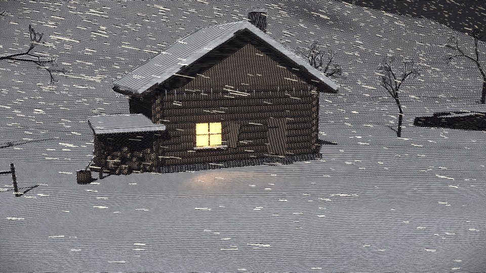
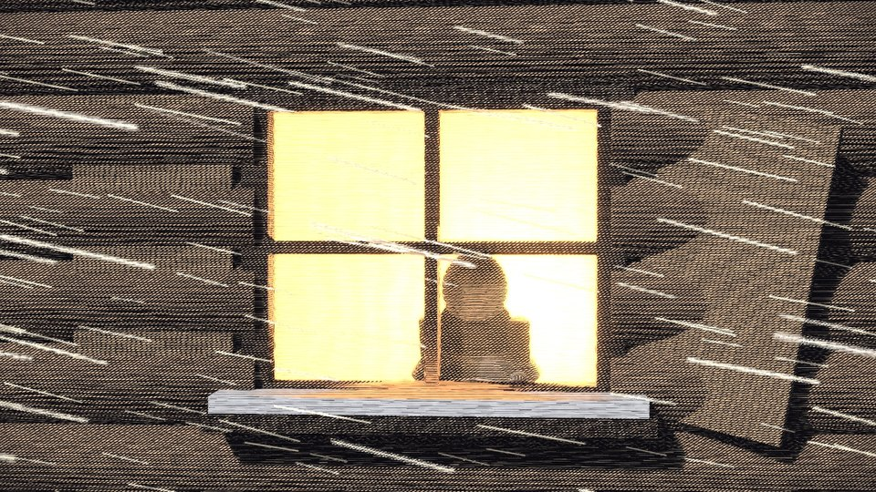
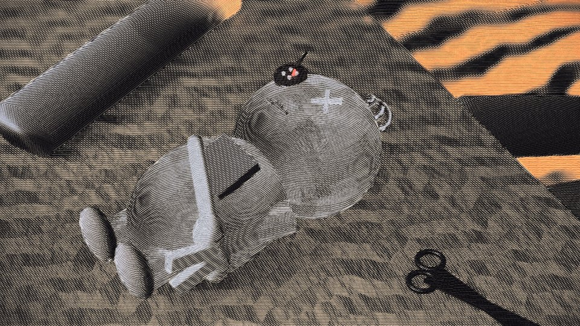
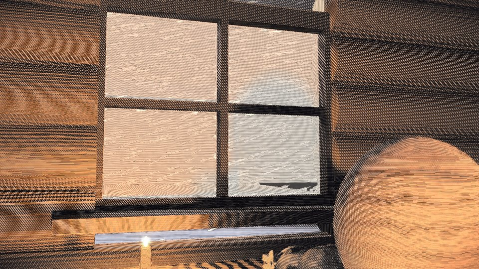
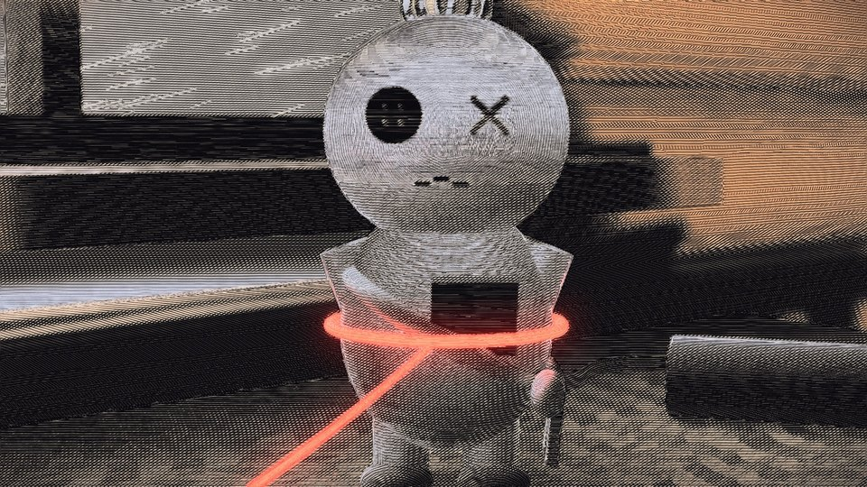
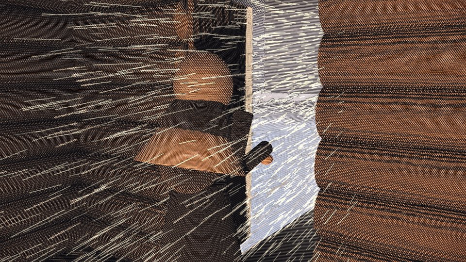
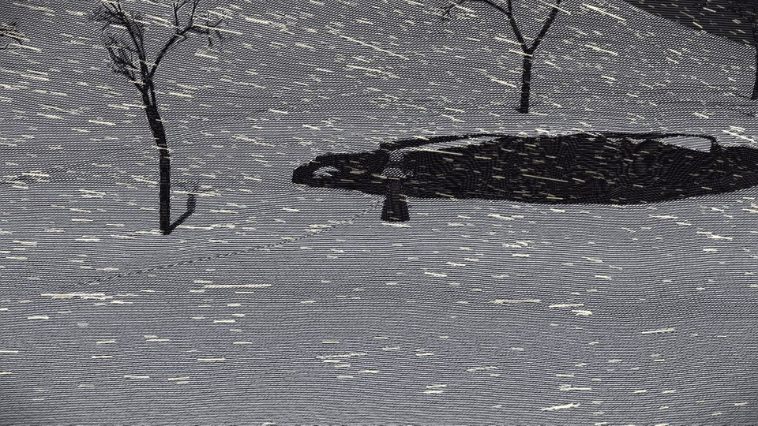
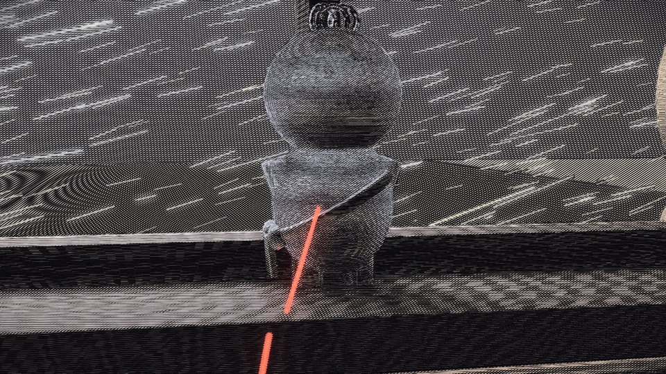
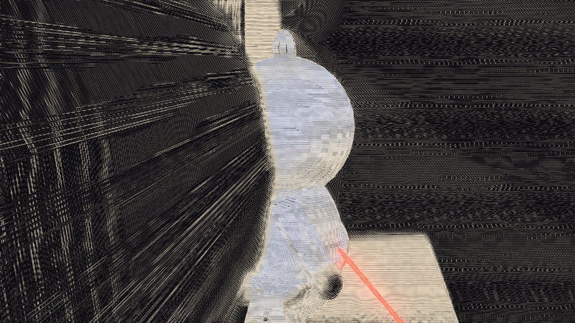

A prologue before the first stepand an epilogue after the last
The game now opens with a prologue film and closes with an epilogue film. Both are full 3D scenes built and rendered offline in Blender, then engraved frame by frame with the same line work, ink and paper as the game, so they cut straight into play without changing style.
The prologue runs about 61 seconds. The epilogue runs about 43 seconds. Together they add about 85 MB to the game.
The prologue
Add cinematic cutscenes to the beginning and the ending of the game. They can be full 3D, rendered offline for the best quality. Be a real cinematographer.
The prologue plays when you choose Begin. It has no dialogue: her voice belongs to the memories you find on the way down, so the film shows the night she left and leaves the telling to the game.

The Brink in a blizzard: one window lit at the edge of the pit

Through the glass, her silhouette bent over her work

The last red stitch, by candlelight

The flame leans toward the window

A loop of red thread drawn tight

The door opens on the storm

Her lantern crossing the snow to the lip

The doll on the sill, alone

Its hand closes on the thread
The shape of it. It opens wide and far away and closes in: the storm, then the window, then her hands, then the doll's face. Then it pushes back out into the cold with her and ends close on the doll again, alone. The last shot is the doll's hand closing on the thread, and the next thing you do in the game is hold that thread.
Light tells the story. The warm window is the only colour in the storm. Inside, the candle and the hearth throw her shadow big across the wall. When the door opens, the candle dies, and from then on the room is lit only by the cold from outside.
Her face is never shown. We see her as a silhouette, a shadow, a shape with a lantern. She stays a presence you're going after, not a character you've met.
Lenses and movement. Wide lenses for the storm, long lenses with a shallow focus for the table, and a little hand-held drift in every camera so nothing feels mechanical. Dissolves only where time passes; everywhere else it cuts.
Sound. The storm is loud outside and muffled through the walls inside. You hear the candle crackling, the thread pulling through, the loop tightening, the door. Under the doll on the sill, the open door bangs once. It is all mixed from the game's own recordings.
The epilogue
❦
You said you don't know the ending yet and didn't want it spoiled, so nothing from the epilogue is on this page.
It plays after the final scene in the Loom, right before the credits. It's made the same way as the prologue and runs a little shorter.
How the films are made
Built in code. Every set, prop, light and camera move is a Python script for Blender 4.2: the cottage log by log, the woodpile dropped log by log like the one in the game, the doll with its button eye, ribbon and patch, the knitter, the spinning wheel, the pit. Snow is thousands of wind-driven streaks recomputed every frame.
Rendered as data, not pictures. Each frame comes out of Blender as lighting, depth, surface direction, world position and a mask for the red thread, the snow and the warm lamps.
Engraved afterwards. A GPU pass turns those into the game's intaglio plate using the same maths as the game's shader. The difference is that the lines are fixed to the surfaces in the world rather than to the screen, so they stay on the walls and the snow as the camera moves. Line spacing follows how each surface faces the camera, so it stays even on foreshortened ground. Like the game's, the lines shift slightly a few times a second (six here, five in the game), so the plate feels hand-cut.
Cut and mixed by script. A last script joins the shots with cuts and dissolves, adds the engraved title card, lays the soundtrack and encodes for the game.
In the game
Begin plays the prologue, then starts the game at the cottage. Continue skips it.
The epilogue plays after the final scene, then the credits roll as before.
Hold any action key or button for about a second to skip a film. A thin red bar fills up while you hold.
The game's own sound is muted while a film plays and comes back after.
Where it is:
The films are app/assets/cine/intro.mp4 and outro.mp4. Everything that makes them is in scripts/cine/, and CLAUDE.md explains how to re-render a shot.